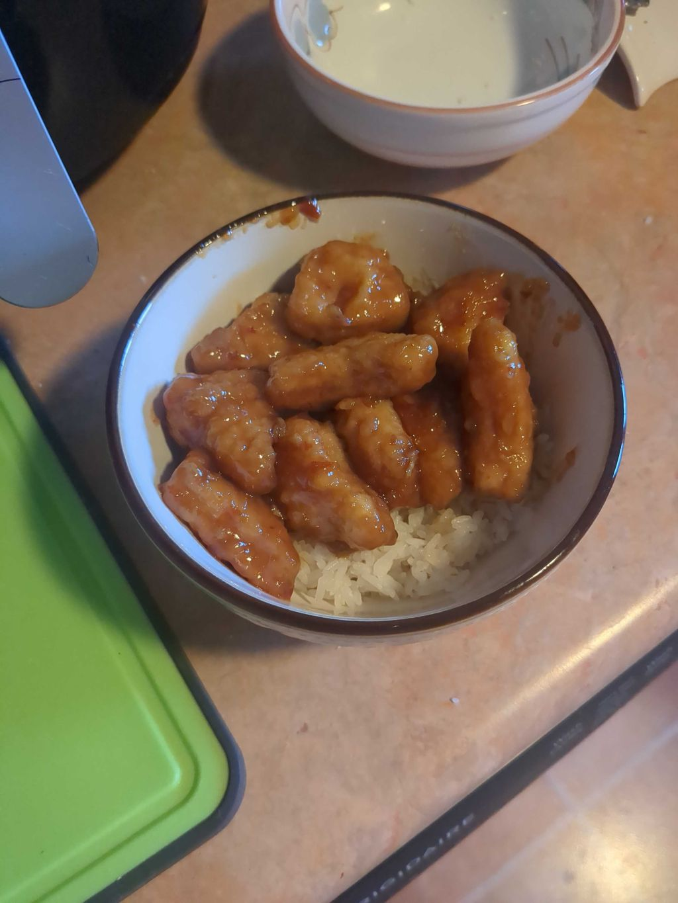

Welcome to task 3! Here, we are going to look at some Chinese food that I made!
You'll hear all about it.

今天晚饭我做了美式中国辣鸡球跟米饭；辣鸡球是P.F.Chang's的，米饭是我父做的。
我觉得这个晚饭时一共4颗星。（kē xīng，stars）
虽然我不确定（què dìng，sure），我觉得这个晚饭要$10快美元，因为饭馆的冰饭平常贵。
这个饭不错，又简单的不得了，所以我可能再吃。